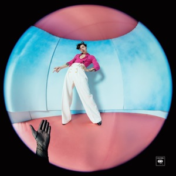
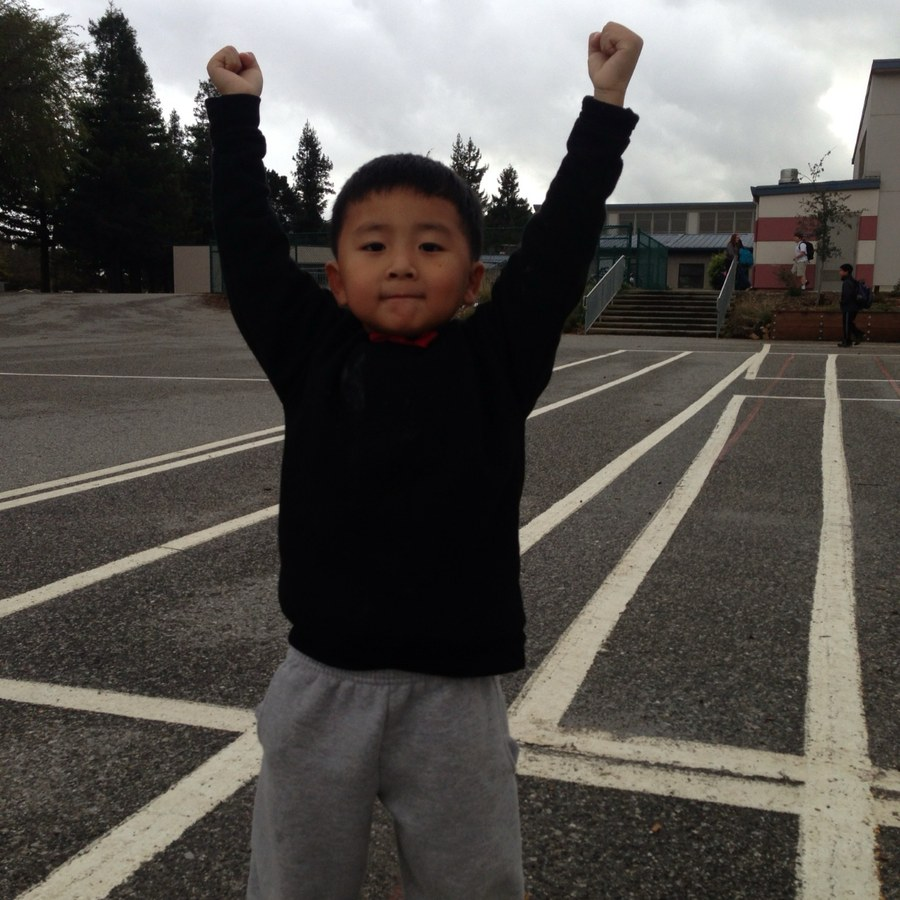

Lucky
Everything, on One Page


I have called this section Lucky, and I would like to be exact about what I mean by it, because false modesty is only bragging with better manners.
I worked for all of these and I am not going to pretend otherwise. What I did not do is arrange the conditions that made the work count for anything, and those conditions turn out to be most of the story: the teacher who kept reading after the first impression had already been formed, the mother who took the night shift so that the school district would be the one it was, the particular year in which a competition happened to be looking for exactly the thing I happened to have been practising. Effort is the part I can honestly claim. Timing is not, and neither is anybody else’s generosity, and a list like this one reads very differently once you have admitted how much of it was handed to you by people who do not appear anywhere on it.
Academic
- Valedictorian
- Top 5 of 553, Los Altos High School
- AI for Business, USC
- Joint Marshall and Viterbi degree. 1 of 35 admitted, under 1% acceptance, third cohort
- GPA
- 3.92 at USC. 4.0 in high school
- SAT
- 1540
- Dean’s List
- Twice
- Global Leader Academy
- Top 10%
Scholarships
- USC Presidential Scholar
- Half-tuition merit award
- Woodruff Family Endowed Scholarship
- Morgan Stanley Endowed Scholarship
Recognition
- TEDx Speaker
- Why You Should Make a Done List
- 1st Place, Stanford ProCo
- Competitive programming, modelled on ACM-ICPC
- AI Innovation Challenge
- USC Marshall OpenAI Lab. Selected from 500+ submissions
- State of California Congressional Award
- Asian Pacific American of Action
- Marshall Ambassador
- Short Story Contest, First Place
- Young Adult category, Palo Alto Weekly, 39th annual
Leadership
- Commencement Speaker
- Chosen by my class to address 500+ graduating seniors
- Student Body President
- Four terms
- Deployed Engineer, AI Builder Hub
- 1 of 4 student engineers
- Alumni Chair, USC Men’s Lacrosse
- 350+ alumni, 51 graduating classes, $165K budget
- Campus Brand Manager, Vuori
- The only USC student selected
- Team Captain, Varsity Football
- Four years, three on varsity
If you want the story behind any one of these, ask me about it. fyruan@usc.edu